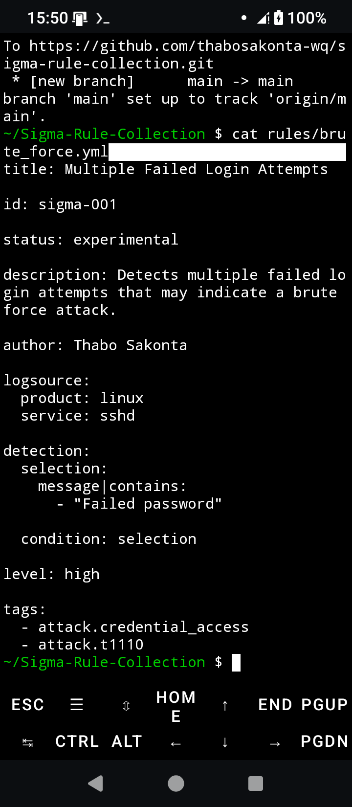

Tools
- Python
- Bash
- Git
- Linux
- Termux
Certifications
- Microsoft Certified: Security Operations Analyst Associate (SC-200)
- Google Cybersecurity Professional Certificate
- Career Essentials in Cybersecurity
- Career Essentials in Generative AI
Featured Projects

Windows Event Analysis Lab
Windows Event Log investigations, authentication analysis, and incident response workflows.
View Project →

Sysmon Event Analysis Lab
Endpoint monitoring using Sysmon event logs to detect malicious behavior and attacker techniques.
View Project →

MITRE ATT&CK Mapping Lab
Mapping detections to MITRE ATT&CK tactics and techniques to improve threat visibility.
View Project →

SOC Dashboard Lab
Interactive SOC dashboard demonstrating security monitoring, alert tracking, and investigation workflows.
View Project →
Portfolio Highlights
10+
Cybersecurity Projects
40+
Detection Rules & Scripts
SC-200
Microsoft Certified Security Operations Analyst
MITRE ATT&CK
Threat Mapping & Detection Engineering